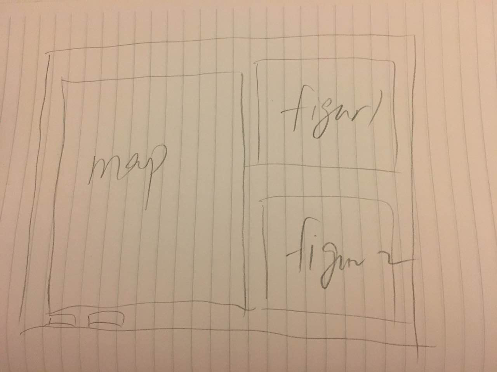
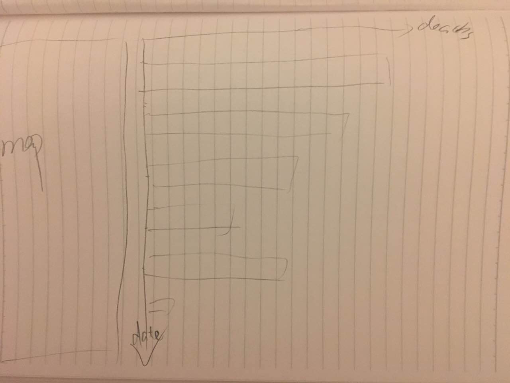
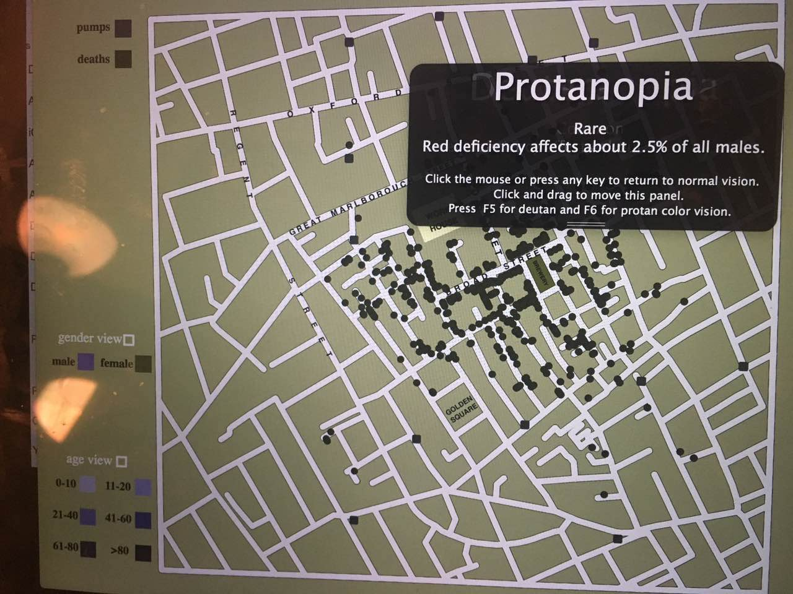
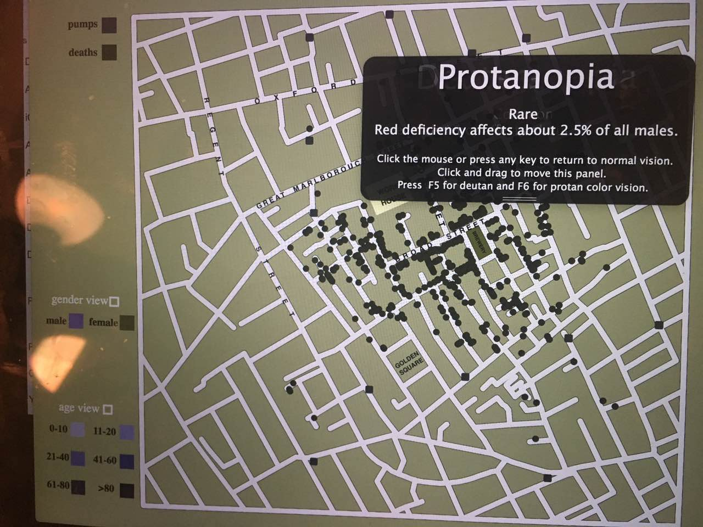
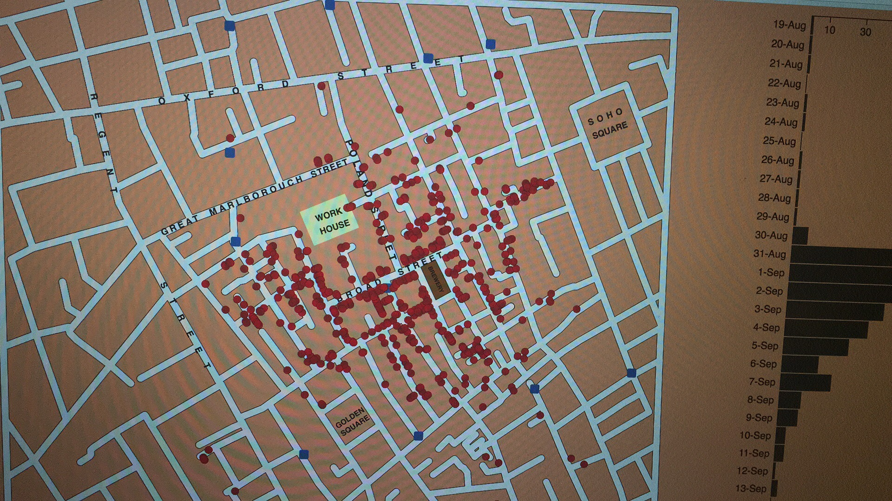
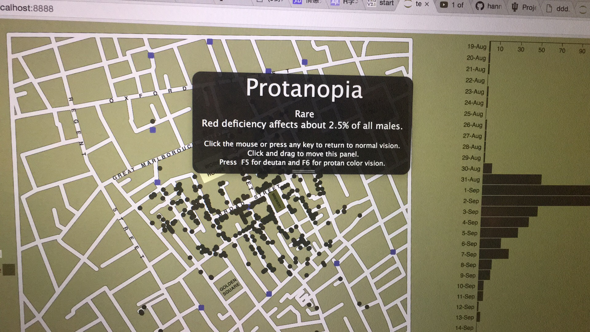
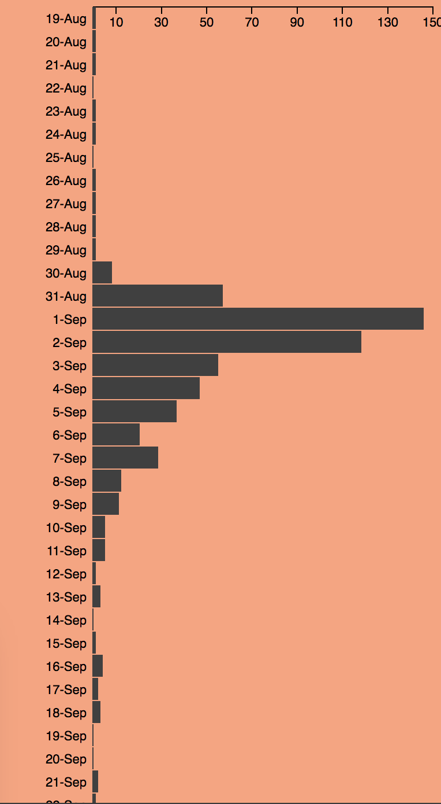
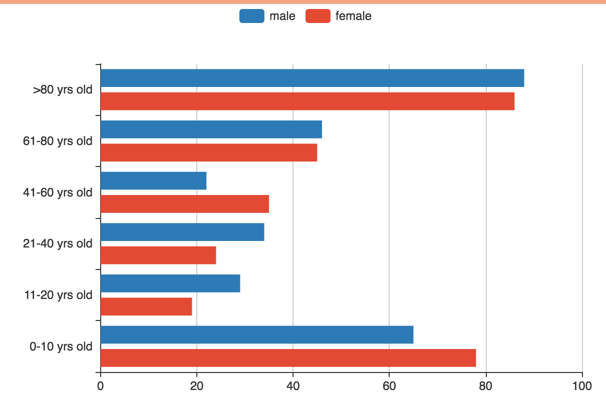

My design process:
I start from drawing the streets since it is the first step and the easiest one. When I first start to plan my whole visualization I was thinking I can put the map in the center of my page. And I had a good reason to do that: map is the biggest element in my whole visualization and it should be very evident and put in the most important place. So it is kind like this:

But then when I actually started my work, I found this is not going to be my final visualization since there are so many other diagrams and charts I should put in my page.If I put map in the center of the whold page then the chart(indicating the date and the deaths) would be too big to fit in either side of the map. So I considered another format as below:
I divided my screen into two parts basically. The left part is for the map and the right part is for diagrams and charts so that one can see more information once he or she opens this page without navigating.
I considered about the diagram which can be controled to show the deaths on the map for a really long time. I tried several ways of representing it and finally I decided to represent that in such way: you click on a bar then the deaths of that day would appear on map as small red dots since red represents death.
Rationale of your design choices:
There are some choices I have to make during this process. One if them is about my charts format design.As for the chart, right after I took a look at all the data and the requirements, I know bar chart would be the best way designing it. We want to indicate the deaths each day and we want to click and see the deaths each day, that makes bar chart pops out since we can easily click on a bar and clearly see what day it represents and the quantity of that day's deaths. A pie chart or line chart won't do that. So I designed my chart as below:
The reason I put this bar chart in such a direction is that the axis of death dates is so much longer than the axis of deaths quantity. I actually trid to make the axis of deaths horizaontal but then I found it would be too long that I have to drag the screen to right for a long distance to see the whole picture.
Another thing is I had a hard time choosing colors represent ages and genders since there should be so many different colors and these colors should match my map backgroud as well as suitable for people who is vision disabled in some aspect. I downloaded color oracle and checked it with my thought for many times and it turns out some color are really beautiful in normal vision but not so good in abnormal condition... Here is some examples:
 

Very beautiful color in normal vision but hardly can tell differences in protanopia mode.
So I changed my color into a view that are both beautiful and won't cause any problem to some people who has common vision problems:
 How you used your visualizations to discover facts or answer questions you had:
There are two things I noticed. First is about the deaths date. I once had a doubt that is "Is there any patterns in terms of death date?" Now I can answer this question without a doubt. My answer is: Yes, these is a certain pattern of death dates. Most people died around Sep 2nd or so. As the screen shot below can prove what I said:
death people are around 150 on days around Sep 2nd. It can be Sep 2nd or so is the end of the incubation period of a ceartain illness caused by something.
Another question I had in the very beginning is whether or not this deaths affect people differently based on their ages or gender? The answer is that there is no significant difference in terms of gender. However, there is a big difference in terms of ages as the charts showed bellow:
we can easily see older people and kids are more eligible to die. I assume it may because old people and kids have low ability to cope with illness.